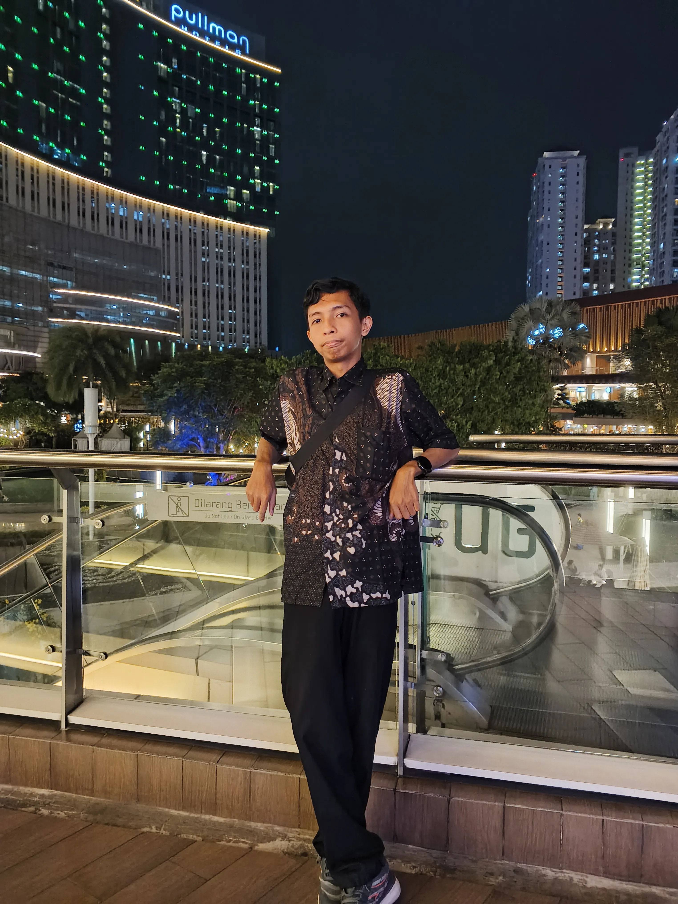
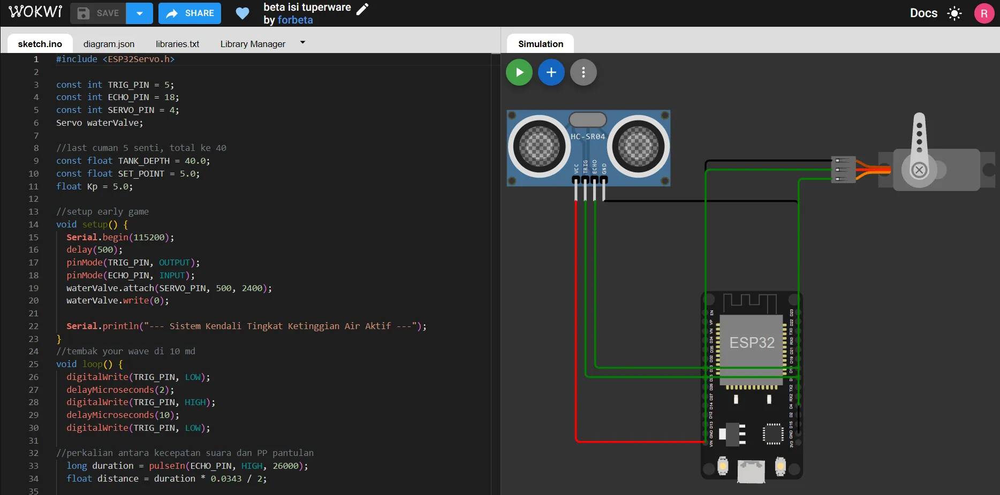
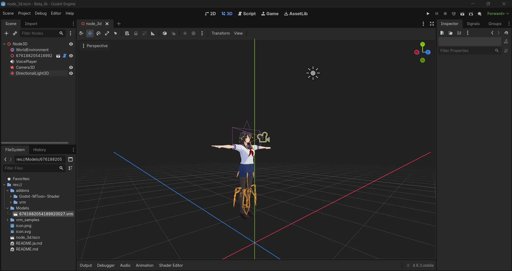

Saya adalah mahasiswa S1 Sistem Komputer di ITB STIKOM Bali yang antusias dalam membangun solusi infrastruktur jaringan yang efisien. Memiliki fokus kuat pada sistem MikroTik, optimasi lalu lintas data, dan manajemen operasional IT berskala Enterprise.
ITB STIKOM BALI — S1 Sistem Komputer (2023 - Sekarang)
Mata Kuliah Relevan: Jaringan Komputer, Keamanan Sistem, Administrasi Jaringan, Arsitektur Komputer.
Infrastruktur: MikroTik RouterOS, Cisco Devices, UTP & Fiber Optic (Splicing/Crimping).
Arsitektur Jaringan: TCP/IP, VLAN, Subnetting, Routing, DHCP, DNS, Network Monitoring.
Keamanan & Trafik: Firewall Rules (NAT/Filter), Hotspot Auth, Bandwidth Management (Queue Tree).
Siapa saja yang membutuhkan profesi saya di bidang Network Engineering dan mengapa keahlian ini krusial bagi bisnis mereka.
Membutuhkan desain arsitektur jaringan berstandar global, routing antar cabang yang efisien, dan VPN yang aman untuk memastikan komunikasi bisnis berjalan 24/7 tanpa downtime.
Membutuhkan manajemen distribusi bandwidth (QoS), pemeliharaan infrastruktur fisik (Fiber Optic/Wireless), serta optimasi latensi demi menjaga kepuasan klien dan stabilitas koneksi.
Memerlukan segmentasi jaringan (VLAN) untuk memisahkan akses publik dan sistem rekam medis internal, serta implementasi Firewall ketat untuk melindungi kerahasiaan data pasien.
Fokus pada keamanan siber dan High Availability. Membutuhkan Network Monitoring aktif untuk mendeteksi anomali trafik serta sistem failover otomatis jika terjadi gangguan pada server utama.
Daftar sertifikasi, pelatihan, dan partisipasi aktif dalam komunitas teknologi.
Mei 2026
Meraih kredensial Microcontroller Programming Associate, membuktikan kompetensi dalam pemrograman sistem mikrokontroler.
Agustus 2024
Menyelesaikan tes sertifikasi bahasa Inggris sebagai standar kemahiran komunikasi akademik dan teknis.
Selesai
Menyelesaikan program pelatihan dengan fokus pada praktik perakitan kabel jaringan dan konfigurasi dasar MikroTik.
Universitas Primakara
Berpartisipasi dalam konferensi pengembang teknologi untuk memperbarui wawasan tren industri IT terkini.
UNDIKNAS
Terlibat dalam acara tahunan komunitas pengembang lokal untuk memperluas koneksi dan wawasan teknologi.
Kandidat (Mei 2025)
Berpartisipasi dalam proses seleksi pendaftaran untuk program cohort BINUS Bali.
Kumpulan proyek IoT, otomatisasi, dan pengembangan sistem yang telah diselesaikan (dilengkapi bukti visual).
Prototipe fisik pemantauan ketinggian air menggunakan ESP32 dan sensor level air. Terintegrasi dengan MQTT dan Python untuk dashboard web.
Lihat Video Dokumentasi ➔Sistem penghematan energi terpadu memanfaatkan deteksi okupansi. Menggunakan ESP32 dan modul relai untuk mengontrol pencahayaan dan suhu otomatis.

Simulasi purwarupa kontrol tangki air otomatis di platform Wokwi. Mengintegrasikan logika sensor jarak HC-SR04 dan motor servo untuk otomasi katup air.

Pengembangan asisten virtual offline menggunakan Godot Engine. Saat ini dalam tahap integrasi model karakter anime format VRM dan persiapan node 3D.